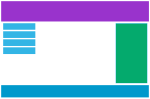

Адаптивний веб-дизайн забезпечує гарний вигляд вашої веб-сторінки на
всіх пристроях.
Адаптивний веб-дизайн використовує лише HTML і CSS.

Desktop
Tablet
Phone
The Viewport
Вікно перегляду – це видима для користувача область веб-сторінки. Вікно
перегляду залежить від пристрою та буде меншим на мобільному телефоні,
ніж на екрані комп’ютера.
НЕ використовуйте великі елементи фіксованої ширини
НЕ дозволяйте вмісту покладатися на певну ширину вікна перегляду для
якісного відтворення
Використовуйте медіа-запити CSS, щоб застосувати різні стилі для
маленьких і великих екранів
Grid-View
Багато веб-сторінок створено на основі сітки, що означає, що сторінка
поділена на стовпці. Використання сітки дуже корисно під час розробки
веб-сторінок. Це полегшує розміщення елементів на сторінці. Адаптивна
сітка часто має 12 стовпців і має загальну ширину 100%, і вона буде
звужуватися та розширюватися, коли ви змінюєте розмір вікна браузера.
Media Queries
Медіа-запит — це техніка CSS, представлена в CSS3. Він використовує
правило @media для включення блоку властивостей CSS, лише якщо
виконується певна умова.
Mobile First означає розробку для мобільних пристроїв перед розробкою
для настільного комп’ютера чи будь-якого іншого пристрою (Це пришвидшить
відображення сторінки на менших пристроях).
/* Extra small devices (phones, 600px and down) */
@media only screen and (max-width: 600px) {...}
/* Small devices (portrait tablets and large phones, 600px and up) */
@media only screen and (min-width: 600px) {...}
/* Medium devices (landscape tablets, 768px and up) */
@media only screen and (min-width: 768px) {...}
/* Large devices (laptops/desktops, 992px and up) */
@media only screen and (min-width: 992px) {...}
/* Extra large devices (large laptops and desktops, 1200px and up) */
@media only screen and (min-width: 1200px) {...}
Images
img {
max-width: 100%;
height: auto;
}
Елемент <picture> працює подібно до елементів <video> і
<audio>. Ви встановлюєте різні джерела, і перше джерело, яке
відповідає параметрам, це те, що використовується